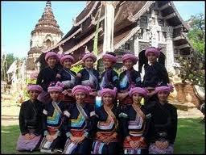

ประเพณี บุญก่ำฟ้า

ประเพณีบุญก่ำฟ้าเป็นประเพณีที่มีความสำคัญและเป็นเอกลักษณ์ของจังหวัดนครสวรรค์
โดยเฉพาะในชุมชนที่มีชาวไทยภูเขา (เผ่ามูเซอ)
ประเพณีนี้จัดขึ้นในช่วงเดือน 3 ตามปฏิทินจันทรคติ
ซึ่งมักตรงกับเดือนมีนาคมหรือเมษายนของทุกปี
ลักษณะสำคัญของประเพณีบุญก่ำฟ้า:
1. ความหมายของคำว่า "บุญก่ำฟ้า":
🔥 "บุญ" หมายถึงการทำบุญหรือกิจกรรมทางศาสนา
🍀 "ก่ำฟ้า" หมายถึงการเริ่มต้นฤดูกาลใหม่ การปลูกพืช ซึ่งมีความเชื่อว่าประเพณีนี้จะนำความเจริญรุ่งเรืองมาสู่ชุมชน
2. การทำบุญ:
🍀 ชุมชนจะจัดกิจกรรมทำบุญตักบาตร โดยมีการจัดเตรียมอาหารและข้าวของเพื่อถวายพระ
🔥 มีการทำบุญเพื่ออุทิศส่วนกุศลให้กับบรรพบุรุษและผู้ที่ล่วงลับไปแล้ว
3. การจัดงานเฉลิมฉลอง:
🍿 จะมีการจัดกิจกรรมแสดงศิลปวัฒนธรรมและประเพณีต่าง ๆ ของชุมชน เช่น การแสดงการละเล่นพื้นบ้าน, การประกวดนางสาวบุญก่ำฟ้า และการแสดงดนตรีพื้นเมือง
4. การละเล่นพื้นบ้าน:
🥓 ในระหว่างงาน จะมีการจัดการแข่งขันกีฬาพื้นบ้านและการละเล่นต่าง ๆ เพื่อสร้างความสนุกสนานและความสามัคคีในชุมชน ที่เชื่อมโยงกับวัฒนธรรมท้องถิ่น
5. พิธีกรรมเฉลิมฉลอง:
🍪 จะมีการจัดพิธีกรรมต่าง ๆ เพื่อขอพรจากฟ้าและดินให้เกษตรกรได้ผลผลิตที่ดีในฤดูกาลที่กำลังจะมาถึง
6. ความเชื่อทางศาสนา:
🥨 ประเพณีบุญก่ำฟ้ายังสะท้อนให้เห็นถึงความเชื่อในเรื่องการทำบุญและการให้เกียรติบรรพบุรุษ รวมถึงการขอพรจากเทพเจ้าเพื่อความเจริญรุ่งเรืองในชีวิต
ประเพณีบุญก่ำฟ้าในนครสวรรค์ไม่เพียงแต่เป็นการทำบุญและเฉลิมฉลอง แต่ยังเป็นการสร้างความสัมพันธ์ในชุมชนและการส่งเสริมวัฒนธรรมท้องถิ่นให้คงอยู่ โดยทุกคนในชุมชนจะมีส่วนร่วมในการจัดกิจกรรม ทำให้เป็นเทศกาลที่เต็มไปด้วยความสุขและความอบอุ่นในสังคมท้องถิ่น